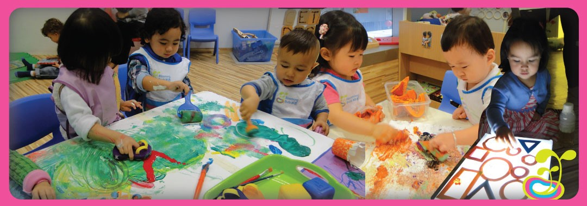

Reggio Emilia approaches was founded by Reggio Emilia an Italian after the world war. The method of learning was made known to many educators in 1970 due to the first exhibition that took place in Stockholm, Sweden in that same year. However, on May 1994, a non-profit organisation was eventually established on behalf of Reggio in 1994 to promote the ideas.
Reggio Emilia theoretical approaches falls into three (3) major categories, namely experienced based . The experienced based contends that children experience should be the main focus of learning. That is, they should learn by doing something active rather than watching or listening. The second theory is called Play-based instruction. Play-based instruction or education states that student educational environment should ensure their exposure to learning while they are at freedom to choose where they play. It ensures children are not forced to learn, but they are encouraged instead to explore and play with materials within their range. The third theoretical linkage is called the “Child-led learning”. The child led learning contend that children should decide whatever they want to learn, when they want to learn it, and how long they want to learn it. The theory believes that children choosing whatever they want to learn will actively engage them in the learning process. Reggio Emilia theoretical linked experience, play and, the child to the learning process. The Reggio Emilia approach was developed to assist children to learn in this new system. Employing some self-guided educational modules, children are permitted to create their identity. The Reggio Emilia approach makes a difference in learning, upgrades early instruction and plans children into school (Parnell, 2010).
Beneath the Reggio Emilia approach, children are seen as dynamic, competent and important individuals of the community. They are empowered to investigate, address, and translate the world to reach their full potential. Teachers utilising the Reggio Emilia approach accept that children ought to have a few control over their learning (Pilgrim, 2017; Kocher, 2008).
Reggio Emilia key strategies for learning can be summarised as followed
Learning
Children have numerous dialects in craftsmanship, music, and dramatisation, and they need to be energised to memorise through encounters like tuning in, moving, touching and watching (Glenn, 2008). The children will learn how to use symbolic language such as painting, drama, sculpting etc in their everyday life
Assessment
The Reggio Emilia approach is an instructive reasoning centering on preschool and essential instruction. The Reggio Emilia approach was developed to assist children to learn in this new system. Employing some self-guided educational modules, permitting children to create their own identities. Reggio Emilia schools encourages consistent communication between instructors and families within the learning process. Carter (2009, p. 27)
Planning and Reflection
Educational methods of Reggio Emilia have started to persuade a number of instructors in Australia as well to re-examine and reconstruct the way in which they display their instructing and generally learning environment. More particularly, it has encouraged them to examine how the visual expressions are entwined inside the environment as a way for children to interact. It is more vital for educators to see these experiences with the instructional method of Reggio Emilia as a means of unwinding their possess values and convictions around educating and learning. More vital, the point is to maintain a strategic distance from the “assimilation of shallow trappings”. It is believed that by creating an expanded mindfulness of the hypothetical viewpoints that advise Reggio Emilia, educators can look at their strategies and prepared to “change what they consider genuine strategies” (Knight, 2008). An expanded understanding of the Reggio Emilia, social and political setting empowers Australian instructors to reflect upon their social setting (Lindsay, 2017).
Goals and outcome
The goal and outcome of Reggio Emilia approaches is to teach students on how to use sign languages in their everyday life
Position on play
Student educational environment should ensure their exposure to learning while they are at freedom to choose where they play. It ensures students are not forced to learn, but they are encouraged instead to explore and play with materials within their range.